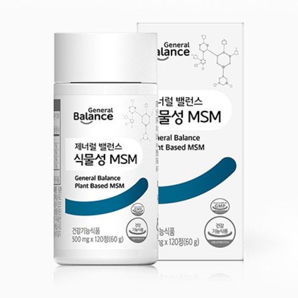

식물성 MSM 55개 팩
제너럴 밸런스 식물성 MSM 55개 구성
- 회원가입 없이 회원가
- 지쿱 본사 정품 직접 발송
- 5만 원 이상 무료배송
식물성 MSM 55개 팩 상세 설명 · 원료와 특징
제품 구성 55개 제너럴 밸런스 식물성 MSM 관절과 연골 건강에 도움을 줄 수 있는 식물성 MSM 함유 용량 : 500 mg X 120정(60g) 자세히 보기 브랜드 스토리 불규칙한 생활습관을 가진 현대인의 몸속 밸런스를 맞추어 주는 건강한 습관 제너럴 밸런스입니다.
스트레스, 영양불균형, 환경오염 등의 원인으로 흐트러진 현대인의 생활패턴으로부터 건강의 균형을 되찾고 기능성과 안전성이 모두 검증된 제품으로 국내뿐만 아니라 전 세계의 건강을 지향합니다.
제너럴 밸런스 식물성 MSM
제너럴 밸런스 식물성 MSM 관절 및 연골 건강에 도움을 줄 수 있는 식물성 MSM 함유 손가락 연골 어깨 팔 연골 캐나다산 DistilPure 식물성 MSM 사용 MSM 100 % 순도 높은 원료 함유 기능성 원료인 MSM의 인체적용 시험 결과 첨가물 무첨가 주요성분 MSM란?
1. MSM란?
MSM이란 메틸설포닐메탄(Methyl Sulfonyl Methane)의 약자입니다. 관절의 연골 및 인대 조직을 만드는 데 꼭 필요한 물질이며 신체의 정상적인 기능과 구조 유지에 중요한 미네랄인 황의 공급원입니다.
2. 황의 역할 황은 인체가 정상적으로 작동하기 위해 필요한 필수 요소이며 체내에 세 번째로 많은 영양소입니다. 관절, 연골 등 인체의 주요 조직을 형성·유지하는 데 중요한 역할을 합니다.
주요 성분 캐나다산 DistilPure 식물성 MSM DistilPure(디스틸퓨어)는 식물에서 순수하게 증류 추출하는 식물성 MSM의 세계적인 브랜드입니다.
식물(옥수수·아마씨·콩)에서 추출한 DistilPure MSM은 국내, ‘식물성’으로 표시할 수 있는 MSM입니다.
캐나다 연구소와 공장 수입신고필증 정부증명서 순도 높은 원료 함유 DistilPure MSM은 순도가 높은 프리미엄 원료 로 업계에서 가장 뛰어난 초순수 증류 기술을 적용해 추출합니다.
기능성 원료인 MSM의 인체적용시험 결과 무릎관절이 불편한 성인남녀 49명을 대상으로 12주 동안 MSM을 3.375 g/일 섭취한 결과 관절 불편함 감소가 확인되었으며 관절 통증 감소 또한 확인 되었습니다.
* WOMAC(Western Ontario and McMaster Osteoarthritis Index) : 관절이 불편한 사람들에게 불편함이나 통증의 정도를 알아보기위해 쓰이는 평가지수 대상 45~90세 사이의 무릎관절이 불편한 이스라엘 남녀 성인 49명, MSM 3.375 g/day 조건 25명 위약군, 25명 시험군으로 무작위 배정 이중맹검 위약대조 6주, 12주간 섭취 결과 MSM을 6주간 섭취했을 때 관절의 뻣뻣함과 운동기능이 통계적으로 유의하게 개선되기 시작하였으며, 12주간 섭취했을 때 관절의 통증, 뻣뻣함, 불편함, 관절 기능이 모두 개선되었을 뿐만 아니라 운동기능, 삶의 질까지도 뚜렷이 개선됨을 확인
[출처] * 시험 결과가 모든 사람에게 동일하게 적용되는 것은 아님 첨가물 무첨가 생산 효율이나 제품 안정화를 위해 사용되는 부형제(이산화규소, 스테아린산마그네슘, 히드록시프로필메틸셀룰로오스) , 향과 색을 내기 위한 첨가물(합성향료, 착색료) 을 사용하지 않고 만들었습니다.
이산화규소 스테아린산 마그네슘 히드록시프로필 메틸셀룰로오스 합성향료 착색료 브랜드 스토리 불규칙한 생활습관을 가진 현대인의 몸속 밸런스를 맞추어 주는 건강한 습관 제너럴 밸런스입니다.
스트레스, 영양불균형, 환경오염 등의 원인으로 흐트러진 현대인의 생활패턴으로부터 건강의 균형을 되찾고 기능성과 안전성이 모두 검증된 제품으로 국내뿐만 아니라 전 세계의 건강을 지향합니다.
이런 분들께 권해드립니다.
관절과 연골 기능이 감소된 분 과체중으로 관절과 연골에 무리가 가는 분 관절과 연골이 불편한 분 오래 서있거나 활동량이 많으신 분 손가락, 손목 관절을 자주 사용하시는 분 건강 정보 1. 관절 건강이란?
관절은 뼈와 뼈가 만나는 부위로, 연골로 둘러싸여 있습니다. 관절 뼈를 덮고 있는 연골이 손실되지 않고 건강하며, 관절을 보호하고 움직임을 부드럽게 돕는 상태를 건강한 관절이라고 합니다.
2. 관절 건강이 중요한 이유 나이가 들어감에 따라 연골이 닳아 없어지거나, 비만이나 과도한 운동 등으로 관절에 무리가 오게 되면 관절 조직을 구성하는 활막이나 연골에 문제가 발생하여 관절 관련 질환이 생길 수 있습니다. 그런 경우 관절이 뻣뻣해지거나 관절이 압박당하는 느낌이 들고, 부종 등의 증상이 나타나서 걸을 때나 가만히 쉴 때도 통증이 유발되어 일상생활에 불편함을 겪게 됩니다. 증상에 따라서는 사망에 이를 수 있으므로 관절 건강을 유지하는 것이 중요합니다.
3. 관절 건강을 악화시키는 원인 노화에 따른 관절의 변화 가공식품 섭취로 인한 영양부족 과격한 운동·과체중 으로 인한 관절 이상 지나친 음주와 흡연 극심한 스트레스 및 피로감 4. 관절 건강을 유지하기 위한 방법 - 규칙적인 운동을 통해 관절 주위의 근육을 강화시켜 관절 기능을 유지할 수 있도록 합니다.
- 관절 및 연골 건강에 도움을 줄 수 있는 건강기능식품 섭취로 관절에 필요한 구성 성분을 공급해 관절 건강을 유지합니다.
각종 인증 사항 비코프인증 획득!
비코프인증(B-Corp Certified) 이란?
B-Corp은 비즈니스를 통해 사회 환경적 문제를 해결하고 사회에 긍정적인 영향을 끼치는 기업을 확대하기 위해서 2007년 BLab (미국비영리 조직)이 만든 글로벌 사회적 기업 인증 제도입니다.
가족친화우수기업 인증 획득!
가족친화인증 가족친화제도를 모범적으로 운영하는 기업 및 공공기관에 대하여 심사를 통해 인증을 부여하는 제도입니다. 가족친화인증 기업은 근로자가 일에 집중하도록 하여 기업 생산성과 경쟁력 강화하고 출산율 제고, 고용 안정 등으로 국가경제 발전에 기여할 뿐 아니라 가족친화경영 확산을 통한 근로자와 가족 구성원의 삶의 질을 향상시키는 바른 기업 문화를 확산 시킵니다.
지쿱 본사 제품 상세페이지 내용을 옮겨 정리했어요.
상품정보제공고시
제너럴 밸런스 식물성 MSM
| 품명 | 제너럴 밸런스 식물성 MSM |
|---|---|
| 식품의 유형 | 건강기능식품/엠에스엠(MSM) |
| 제조 및 판매원 | 제너럴바이오㈜ /전북 남원시 송동면 용투산로 254 |
| 유통전문판매원 | 제너럴바이오㈜ /전북 남원시 송동면 용투산로 254 |
| 제조연월일, 유통기한 또는 소비기한(품질 유지기한) | 제품에 별도 표기 |
| 포장단위별 용량(중량), 수량 | 500 mg x 120정(60g) |
| 원재료명 및 함량(농수산물의 원산지 표시에 관한 법률에 따른 원산지 표기 포함) | 엠에스엠(MSM 100 % 이상), 캐나다산 100 % |
| 영양정보 | 1일 섭취량 : 4정(2,000 mg) 1일 섭취량당 함량 : 열량 10 kcal, 탄수화물 2 g(1 %), 단백질 0 g(0 %), 지방 0 g(0 %), 나트륨 0 mg(0 %), 엠에스엠 1,960 mg ※ % 영양성분 기준치 : 1일 영양성분 기준치에 대한 비율 |
| 기능정보 | [엠에스엠(MSM)] 관절 및 연골건강에 도움을 줄 수 있음 |
| 섭취량 및 섭취방법 | 1일 2회, 1회 2정을 충분한 물과 함께 섭취하십시오. |
| 섭취 시 주의사항 및 부작용 가능성 | 1. 질환이 있거나 의약품 복용 시 전문가와 상담하십시오 2. 알레르기 체질 등은 개인에 따라 과민반응을 나타낼 수 있습니다. 특이체질, 알레르기 체질이신 분은 성분을 확인한 후 섭취하시기 바랍니다. 3. 영·유아, 어린이, 임산부 및 수유부는 섭취에 주의하십시오. 4. 이상 사례 발생 시 섭취를 중단하고 전문가와 상담 하십시오. 5. 섭취량 및 섭취 방법을 확인하고 섭취하여 주십시오. 6. 유통기한이 경과된 제품은 섭취하지 마십시오. 7. 용기 내에 들어있는 방습제는 섭취하지 마십시오. |
| 질병의 예방 및 치료를 위한 의약품이 아니라는 내용의 표현 | 해당없음 |
| '유전자변형건강기능식품'에 해당하는 경우의 표시 | 해당없음 |
| 표시광고 사전심의필 | 사전심의필 완료 |
| 수입식품에 해당하는 경우 "건강기능식품에 관한 법률에 따른 수입신고를 필함"의 문구 | 해당없음 |
| 소비자 상담 문의 | 카카오톡으로 문의 주시면 지쿱 본사로 접수해 드립니다. |
스페셜팩·세트 다른 제품
배송·교환·반품
지쿱 본사에서 직접 발송해요. 50,000원 이상 주문 시 무료배송, 50,000원 미만은 배송비 2,500원이에요. A/S·교환·반품은 카카오톡으로 문의 주시면 지쿱 본사로 접수해 드려요.